1단계 레퍼런스 3개 · 2단계 첫 화면 + 제품 선택 시안 2방향(화이트 / 스틸) · 3D 정지 시안 2개. 대상: PDRN Lift 4종 + REJUVUSTER Cream+만. 아마존 Store Builder 미반영. 2026-11-19
구조는 The Ordinary 하나로 정하고, 소재감과 제품 사진은 각각 다른 곳에서 가져옵니다. 다른 브랜드의 로고·문구·사진은 시안에 쓰지 않았고, 배치 원리·여백·사진 비중만 참고했습니다.
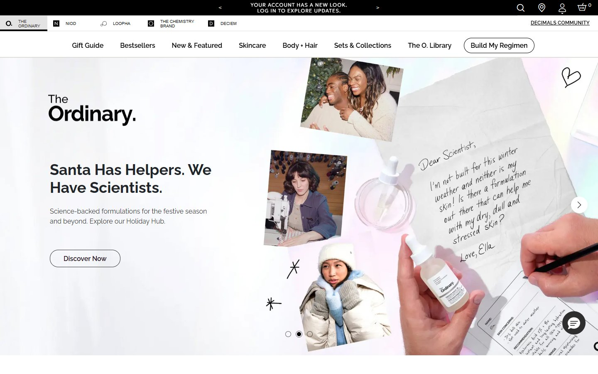
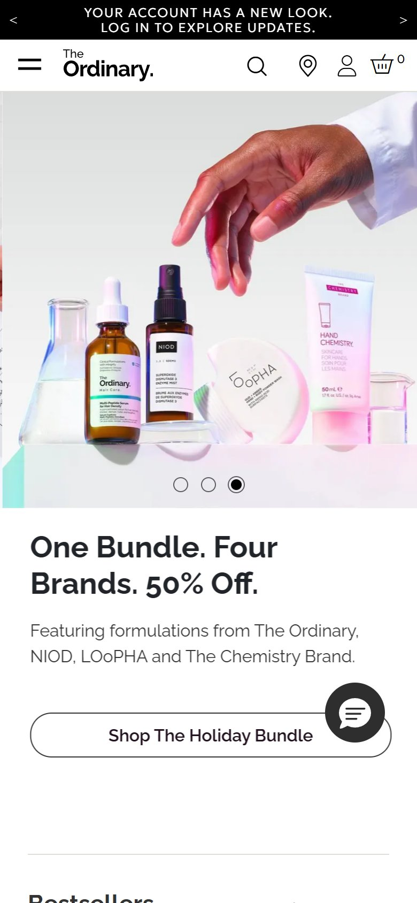
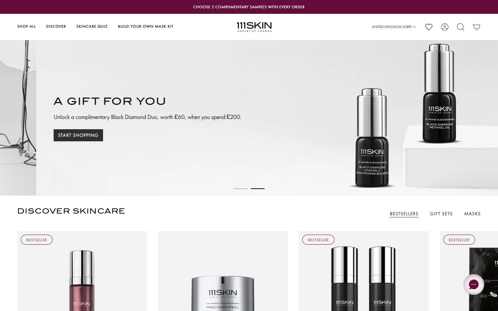
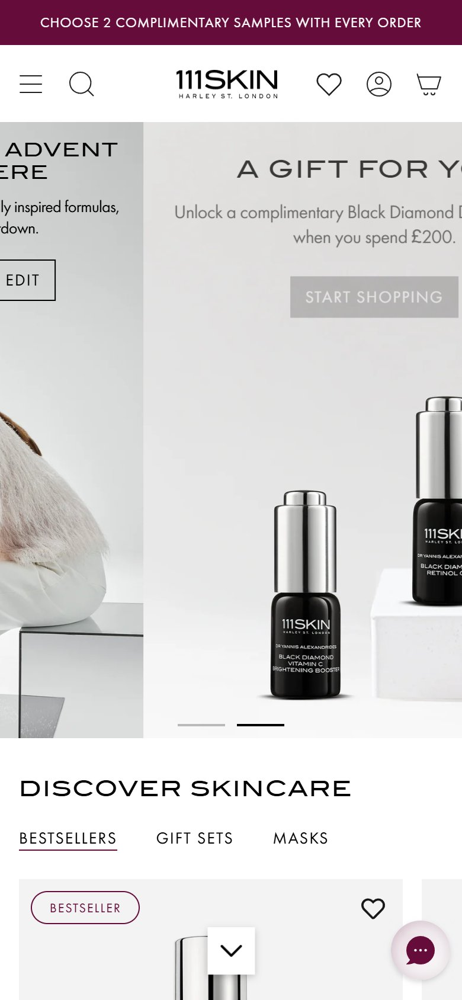
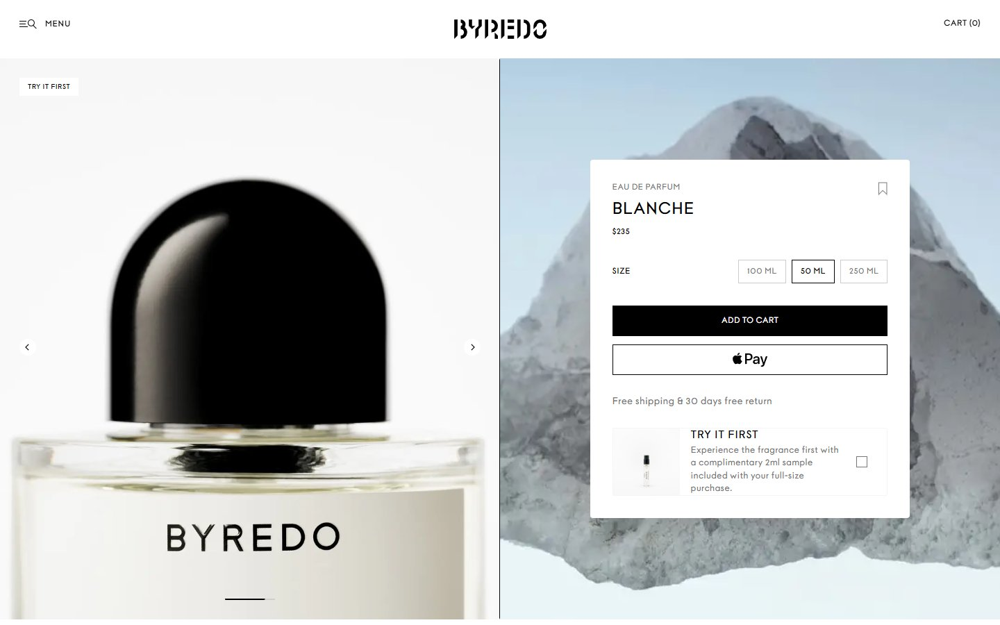
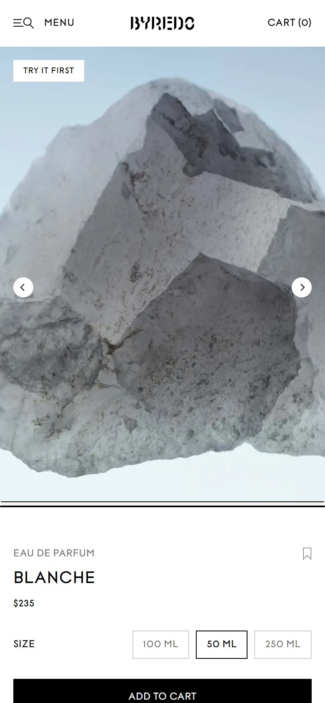
| 공식몰 표현 | 아마존 구현 | 제약 |
|---|---|---|
| 첫 화면 큰 사진 + 글 | 전체 폭 이미지 칸 1장. 글자는 이미지에 넣음. PC 3000 폭, 모바일은 글 + 정사각 사진으로 다시 짠 별도 이미지(1680 폭) | 아마존 칸에는 웹 서체를 쓸 수 없어 글자를 이미지에 넣어야 함 |
| 첫 화면 움직임 | 방향 선택 후 같은 구도로 배경 비디오 칸 사용(자동·무음·반복). 2–20초, 최소 1280×640, 6:4–8:3 비율 | 일반 영상 칸은 눌러야 재생됨 → 배경 비디오 칸만 자동 재생 |
| 상단 메뉴 | 아마존 기본 페이지 탭(Home / Shop All / PDRN Lift / REJUVUSTER / About Us) | 디자인할 수 없음. 시안 맨 위 회색 줄이 이 부분 |
| 제품 카드 4칸 | PC는 4분의1 이미지 칸 4개(750 폭), 모바일은 2×2. 칸마다 상품 링크 1개 | 아마존 "상품 칸"은 별점·가격이 자동으로 붙음 → 별점을 빼기로 해서 이미지 칸 사용 |
| 라인 탭·필터 | 라인 제목 칸(전체 폭) → 라인 페이지 링크 | 탭 전환 같은 상호작용은 불가 |
| 칸 사이 여백 | 여백도 이미지 안에 포함 | 아마존이 칸 사이에 흰 틈을 넣음 → 스틸 바탕 구역은 칸 사이에 흰 줄이 생김(시안 B의 약점) |
라벨은 새로 그리지 않고 실제 패키지 누끼를 정면에 투영했습니다. 튜브는 무광 플라스틱(빛 번짐 줄임, 미세한 표면 결), 받침 위 접지 그림자는 실제 광선 계산입니다. 선택한 쪽으로 움직임(정면 기준 ±8° 기울기 + 빛이 천천히 지나감)을 적용합니다.
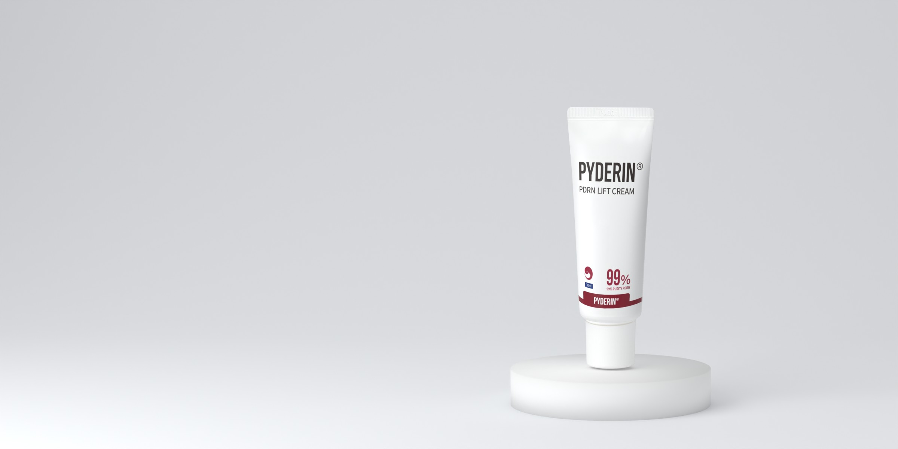
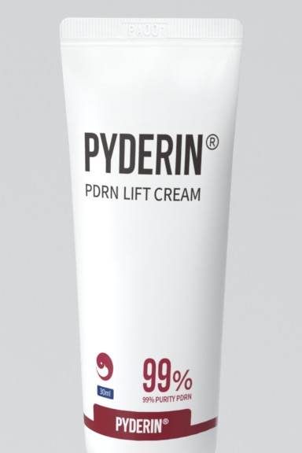
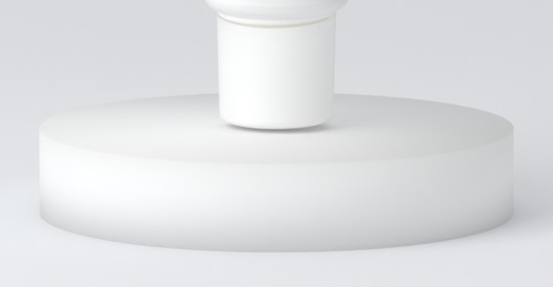
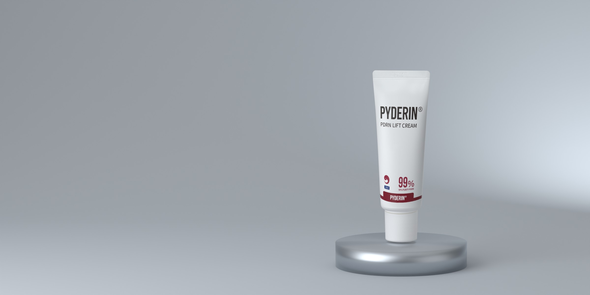
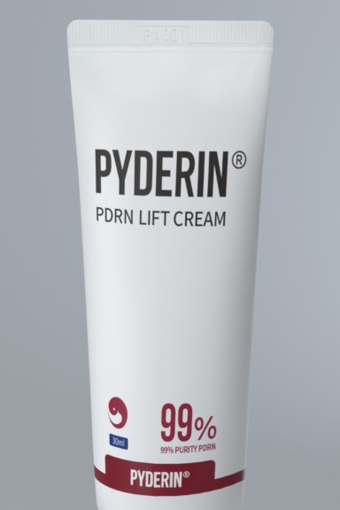
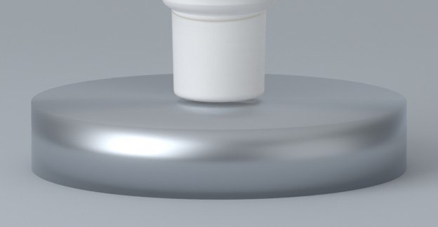
첫 화면과 제품 선택 칸 모두 흰 바탕. The Ordinary 구조에 가장 가깝고, 아마존 흰 틈과도 자연스럽게 이어짐.
첫 화면은 스틸 배경 + 금속 받침, 제품 선택 칸은 연한 스틸 바탕 위 밝은 카드. 브랜드 색은 더 분명하지만 칸 사이 흰 틈이 보임.
첫 화면만 스틸 배경 + 금속 받침, 제품 선택 칸은 흰 바탕. 라인 제목 선만 스틸 회청색으로 이어 줌.